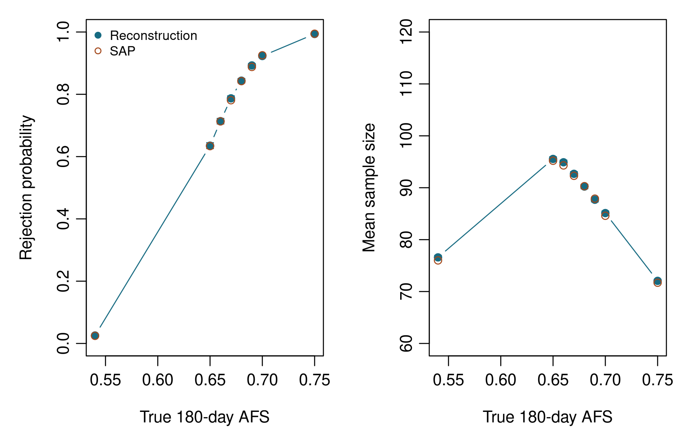

library(goldilocks)
example_file <- system.file("examples", "promise-ii.R", package = "goldilocks")
source(example_file)
design <- promise_ii_design()PROMISE II evaluated transcatheter arterialization of deep veins in patients with chronic limb-threatening ischemia who had no conventional surgical or endovascular revascularization option. Its single-arm Bayesian Goldilocks design compared 180-day amputation-free survival (AFS) with a performance goal of 54% [1-3]. This vignette reconstructs the planned maximum sample size of 120 patients, with interim analyses after 60, 75, 90, and 105 patients entered the analysis population.
The target is the 120-patient design in protocol Revision 2 and the corresponding operating characteristics reproduced in Table 3 of SAP Revision 5 [2]. The earlier Revision 0 protocol proposed historical borrowing; that is not the design reconstructed here. The later reduction of maximum enrollment to 105 patients and the observed trial results are not simulated.
The calculations reproduce the documented endpoint model, predictive rules, and missing-data procedure. They constitute an independent reconstruction, rather than a reproduction of the sponsor’s software. The SAP specifies enrollment rates but not the mechanism for generating individual enrollment times; this example makes that assumption explicit and examines its influence.
Planned design and final analysis
The primary analysis population was modified intention to treat: all patients in whom a LimFlow device was introduced, irrespective of technical or procedural success. Simulations start directly with this population. The event is all-cause death or above-ankle amputation of the index limb by day 180. Let \phi denote 180-day AFS. The hypotheses are
H_0: \phi \le 0.54, \qquad H_1: \phi > 0.54.
For a completed dataset containing s patients with AFS among n patients, the uniform prior gives
\phi \mid s,n \sim \operatorname{Beta}(1+s,\,1+n-s).
Final success requires \Pr(\phi > 0.54 \mid \text{data})>0.977. For incomplete outcomes, the SAP averages this posterior probability over completed datasets obtained by Bayesian multiple imputation. It then compares the average with 0.977. This differs from the interim predictive calculation, which averages indicators that a completed dataset passes the final threshold.
The package codes the adverse event rather than AFS. Consequently,
method = "bayes-bin", alternative = "less",
and h0 = 0.46 express the same hypothesis. The symmetric
prior_bin = c(1, 1) is unchanged by switching between event
and event-free probabilities.
| Quantity | Specification |
|---|---|
| Maximum sample size | 120 mITT patients |
| Endpoint | Amputation-free survival at 180 days |
| Performance goal | 54% AFS; 46% event probability |
| Binary analysis prior | Beta(1, 1) |
| Final posterior threshold | Strictly greater than 0.977 |
| Predictive and final-imputation priors | Independent Gamma(0.001, 0.001), shape-rate |
| Imputation intervals | [0, 30], (30, 60], (60, 90], (90, 180] days |
Interim decisions
At each look, PP_n is the predictive probability of final success if enrollment stops with the current cohort. PP_{120} predicts success after completing enrollment to 120. Both calculations use completed binary outcomes at day 180, including imputed outcomes for patients with incomplete follow-up; PP_{120} additionally includes future patients.
N_total <- design$N_total
interim_look <- design$interim_look
Sn <- design$Sn
Fn <- design$Fn
Qn <- 1 # No immediate declaration of success.
knitr::kable(data.frame(
`Enrolled patients` = interim_look,
`Stop for promising trend if PPn >` = Sn,
`Stop for futile trend if PP120 <` = Fn,
check.names = FALSE
), digits = 2, caption = "Table 2. Planned interim boundaries [2, protocol Table 6].")| Enrolled patients | Stop for promising trend if PPn > | Stop for futile trend if PP120 < |
|---|---|---|
| 60 | 0.98 | 0.05 |
| 75 | 0.95 | 0.10 |
| 90 | 0.90 | 0.15 |
| 105 | 0.90 | 0.15 |
The ordered decisions are:
- Stop enrollment for a promising trend if PP_n>S_n.
- Otherwise, stop enrollment for a futile trend if PP_{120}<F_n.
- Otherwise, enroll the next 15 patients, up to 120.
Equality does not cross either boundary. In every case, enrolled patients have the opportunity to complete 180 days of follow-up before the final analysis. A promising interim result is not an immediate claim of success. The protocol also specifies final analysis after enrollment stops for futility; the reconstruction therefore evaluates the final posterior criterion in those trials too.
This last point differs from sim_trial(), which counts a
binding futility decision as final failure. The example helper preserves
the PROMISE II procedure without changing the package’s general stopping
rules. It records both the reason for stopping enrollment and the
eventual final result.
The protocol’s COVID-19 provision could allow additional enrollment when a parallel analysis censoring COVID-19 deaths did not cross its futility boundary. However, the principal analysis retained the cohort selected by the ordinary AFS rule [2, SAP Section 6.4.1]. This vignette reconstructs that principal analysis; it does not generate causes of death or simulate the additional COVID-19 sensitivity cohort.
Event times, dropout, and enrollment
The SAP specifies the following daily hazards at the null AFS rate of 54%:
knitr::kable(data.frame(
`Interval (days)` = c("0-30", "30-60", "60-90", "90-180"),
`Daily hazard` = design$base_hazard,
`AFS at interval end` = exp(-cumsum(design$base_hazard * c(30, 30, 30, 90))),
check.names = FALSE
), digits = c(0, 10, 2), caption = "Table 3. Reported event-time generator [2, SAP Section 6.7].")| Interval (days) | Daily hazard | AFS at interval end |
|---|---|---|
| 0-30 | 0.005417298 | 0.85 |
| 30-60 | 0.006471870 | 0.70 |
| 60-90 | 0.004045362 | 0.62 |
| 90-180 | 0.001535004 | 0.54 |
For a target AFS probability \phi^*, multiply all four hazards by
k = \frac{-\log(\phi^*)}{\sum_{j=1}^4 \lambda_j\Delta_j}.
Thus S_k(180)=\exp\{-k\sum_j\lambda_j\Delta_j\}, approximately 0.54^k. This corrects an apparent typographical error in the last equality of the SAP’s scaling equation. Using the cumulative hazard from the printed rates also avoids propagating their small rounding error.
hazard_treatment <- promise_ii_hazard(0.70)
1 - ppwe(matrix(hazard_treatment, nrow = 1),
end_of_study = 180, cutpoints = c(30, 60, 90))
#> [1] 0.7Each patient independently has probability 0.10 of being designated for dropout. For designated patients, dropout time is Uniform(0,180); otherwise it is infinite. Event times and dropout times are independent. An event preceding dropout remains observed. At an interim analysis, follow-up is also censored at the current calendar date. The same event and dropout histories are retained across looks and at final analysis.
This mechanism is not the exponential dropout model used by
sim_trial_data(prop_loss = 0.10). The helper therefore
generates the SAP’s dropout times explicitly and uses
pwe_sim() for event times.
The expected enrollment schedule is 1, 2, 2, 3, 3, 4, and 4 patients per month during months 1-7, followed by 5 per month. The slower schedule is 1, 1, 2, and 2 per month, followed by 3; the faster schedule is 2, 3, 4, 5, and 6 per month, followed by 7 [2, SAP Section 6.7].
lambda <- design$accrual$expected / 30
lambda_time <- (1:7) * 30All numerical times in this example are in days. Thirty days per simulation month is an explicit convention consistent with the 180-day endpoint and monthly hazard boundaries. The primary reconstruction uses the package’s piecewise Poisson enrollment process, with the first patient at time zero. A sensitivity analysis uses fixed spacing on the cumulative enrollment-rate scale, with the same monthly rates and time origin. Neither individual enrollment mechanism is specified in the SAP.
Predictive imputation and a package example
In interval j, let D_j and T_j be observed events and patient-days of exposure. The prediction model is
\lambda_j \mid \text{data} \sim \operatorname{Gamma}(0.001+D_j,\;0.001+T_j),
independently across intervals. An event-free patient censored at q<180 has conditional event probability 1-\exp\{-[H(180)-H(q)]\}. A single draw of the four hazards is shared by all patients within each completed dataset. Conditional on that draw, missing binary outcomes are sampled independently. Future patients have q=0; their total event count can therefore be drawn directly from a binomial distribution.
These calculations correspond to evaluate_interim() with
Bernoulli imputation and exact beta-tail probabilities. The following
simulated 75-patient data cut illustrates the package call:
set.seed(8)
trial_data <- promise_ii_generate(afs = 0.70)
interim_data <- promise_ii_cut(trial_data, n = 75)
interim <- evaluate_interim(
data = interim_data,
data_cut = attr(interim_data, "data_cut"),
look = 2,
N_total = 120,
end_of_study = 180,
cutpoints = c(30, 60, 90),
prior_surv = c(0.001, 0.001),
prior_bin = c(1, 1),
single_arm = TRUE,
method = "bayes-bin",
alternative = "less",
h0 = 0.46,
prob_ha = 0.977,
Sn = 0.95,
Fn = 0.10,
Qn = 1,
bin_method = "quadrature",
binary_imputation = "bernoulli",
empty_interval = "prior",
N_impute = 10000,
seed = 28
)
interim$probabilities
#> estimand probability threshold direction threshold_crossed
#> 1 success_if_stop_now 0.7628 0.95 greater FALSE
#> 2 success_at_maximum 0.8812 0.10 less FALSEFor the repeated-trial calculations, the helper uses vectorized event
counts to avoid repeatedly constructing completed patient datasets. Its
interim probabilities are checked against
evaluate_interim() in the package tests. Final imputation
is checked against an analytical calculation with one missing outcome.
Further checks cover censoring, events exactly at interval boundaries,
stopping-rule equality, final analysis after a futility stop, and
reproducibility across worker counts.
Reconstructing the operating characteristics
The SAP’s original-design reference is Table 3, not Table 2: Table 2 describes the later 105-patient cap. Table 3 reports power 0.8423 at AFS 68%, power 0.9253 at AFS 70%, and type I error 0.0244 at AFS 54% [2].
The saved reconstruction uses 10,000 trials per scenario and 10,000 predictive draws per analysis, matching the reported simulation sizes. The table gives exact binomial 95% Monte Carlo intervals for the reconstructed rejection probabilities. These quantify simulation uncertainty under the stated assumptions; they do not quantify uncertainty in the clinical assumptions or eliminate differences between enrollment mechanisms.
| True AFS | SAP power | Power (95% MC interval) | SAP mean N | Reconstructed mean N |
|---|---|---|---|---|
| 0.54 | 0.0244 | 0.0255 (0.0225, 0.0288) | 76.0 | 76.6 |
| 0.65 | 0.6336 | 0.6351 (0.6256, 0.6445) | 95.2 | 95.5 |
| 0.66 | 0.7130 | 0.7137 (0.7047, 0.7225) | 94.3 | 94.9 |
| 0.67 | 0.7810 | 0.7870 (0.7788, 0.7950) | 92.3 | 92.7 |
| 0.68 | 0.8423 | 0.8437 (0.8364, 0.8508) | 90.3 | 90.2 |
| 0.69 | 0.8879 | 0.8927 (0.8865, 0.8987) | 87.9 | 87.7 |
| 0.70 | 0.9253 | 0.9230 (0.9176, 0.9282) | 84.6 | 85.1 |
| 0.75 | 0.9945 | 0.9937 (0.9919, 0.9952) | 71.7 | 72.1 |

Figure 1. Reconstructed rejection probabilities and mean sample sizes compared with SAP Table 3. Vertical intervals show 95% Monte Carlo intervals for the reconstruction.
Both the reference and reconstructed powers are simulation estimates. Dividing each difference by the square root of the sum of their estimated Monte Carlo variances gives a largest absolute standardized difference of 1.09 across the eight primary scenarios. The largest absolute difference in mean sample size is 0.60 patients. These are descriptive comparisons across several scenarios, not a formal equivalence test.
The stopping distributions provide a more detailed check than power alone. Table 5 compares the null and 70% AFS scenarios; the complete reference grid and individual simulated results are retained in the saved results.
| AFS | N | Reason | SAP | Reconstruction |
|---|---|---|---|---|
| 0.54 | 60 | futile | 0.4647 | 0.4552 |
| 0.54 | 60 | promising | 0.0019 | 0.0026 |
| 0.54 | 75 | futile | 0.2317 | 0.2276 |
| 0.54 | 75 | promising | 0.0033 | 0.0043 |
| 0.54 | 90 | futile | 0.1379 | 0.1426 |
| 0.54 | 90 | promising | 0.0049 | 0.0044 |
| 0.54 | 105 | futile | 0.0688 | 0.0663 |
| 0.54 | 105 | promising | 0.0058 | 0.0071 |
| 0.54 | 120 | maximum | 0.0810 | 0.0899 |
| 0.70 | 60 | futile | 0.0093 | 0.0099 |
| 0.70 | 60 | promising | 0.2654 | 0.2482 |
| 0.70 | 75 | futile | 0.0099 | 0.0094 |
| 0.70 | 75 | promising | 0.2287 | 0.2354 |
| 0.70 | 90 | futile | 0.0133 | 0.0114 |
| 0.70 | 90 | promising | 0.1846 | 0.1927 |
| 0.70 | 105 | futile | 0.0080 | 0.0079 |
| 0.70 | 105 | promising | 0.1424 | 0.1426 |
| 0.70 | 120 | maximum | 0.1384 | 0.1425 |
Sensitivity to enrollment
The SAP reports null rejection probabilities of 0.0260 and 0.0246 for slower and faster accrual under the 120-patient design [2, Table 5]. Its corresponding mean sample sizes are 74.7 and 78.2. The fixed-spacing scenarios below additionally assess the unspecified individual enrollment mechanism. All other design and analysis settings remain unchanged.
| Scenario | AFS | SAP power | Power (95% MC interval) | Mean N |
|---|---|---|---|---|
| Slower Poisson accrual | 0.54 | 0.0260 | 0.0279 (0.0248, 0.0313) | 74.9 |
| Faster Poisson accrual | 0.54 | 0.0246 | 0.0244 (0.0215, 0.0276) | 78.1 |
| Expected rates, fixed spacing | 0.54 | Not reported | 0.0266 (0.0235, 0.0299) | 76.7 |
| Expected rates, fixed spacing | 0.70 | Not reported | 0.9275 (0.9222, 0.9325) | 85.1 |
A simulated type I error estimate slightly above 0.025 is not, on its own, evidence that the underlying rate exceeds 0.025. Equally, agreement within Monte Carlo uncertainty does not establish exact reproduction of the sponsor’s calculations. The unreported enrollment mechanism remains a limitation; the source code and random-number settings used by the sponsor would be needed to settle it.
Supporting fixed-sample calculations
The SAP uses conventional exact-binomial calculations to motivate the adaptive sample-size range. For a one-sided test at 0.025 against 54% AFS, the following calculations reproduce its rounded power statements:
exact_power <- function(n, afs) {
successes <- 0:n
critical <- min(successes[pbinom(successes - 1, n, 0.54, lower.tail = FALSE) <= 0.025])
data.frame(N = n, AFS = afs, Critical_successes = critical,
Power = pbinom(critical - 1, n, afs, lower.tail = FALSE))
}
knitr::kable(rbind(exact_power(101, 0.68), exact_power(101, 0.70),
exact_power(56, 0.75)), digits = c(0, 2, 0, 4),
col.names = c("N", "True AFS", "Critical success count", "Power"),
caption = "Table 7. Fixed-sample calculations supporting the planned range.")| N | True AFS | Critical success count | Power |
|---|---|---|---|
| 101 | 0.68 | 65 | 0.8144 |
| 101 | 0.70 | 65 | 0.9093 |
| 56 | 0.75 | 38 | 0.9146 |
These are complete-data frequentist calculations, not the power of the adaptive Bayesian design. The latter depends on enrollment, partial follow-up, dropout, predictive stopping, and final multiple imputation.
Reproducing the results
The installed helper is an inspectable R script, located by
example_file above. It contains the complete design
settings, reported reference table, data generation, interim and final
calculations, and repeated-trial simulation. For a small exploratory
run:
example_result <- promise_ii_simulate(
afs = 0.70, N_trials = 100, N_impute = 10000,
seed = 11012033, accrual = "expected", enrollment_model = "poisson", ncores = 1
)
promise_ii_summary(example_result)The complete saved analysis can be regenerated from the repository root:
That script explicitly defines all twelve scenarios, assigns an
independent seed to each, and writes
vignettes/promise-ii-results.rds. The result retains
individual trial outcomes, scenario settings, reference values,
source-script checksums, and R and package versions. Trial-specific
random-number streams make results reproducible across worker counts; no
failed trial is silently discarded. Rendering the vignette reads these
verified saved results rather than repeating the simulation.
References
- Shishehbor MH, Powell RJ, Montero-Baker MF, et al. Transcatheter arterialization of deep veins in chronic limb-threatening ischemia. N Engl J Med. 2023;388:1171-1180. doi:10.1056/NEJMoa2212754.
- PROMISE II investigators. Study protocol and statistical analysis plan supplement to Shishehbor et al. (2023). Protocol Revision 2, Tables 6-7; SAP Revision 5, Sections 6.2-6.7, Tables 3 and 5, and Appendix 2. Published protocol and SAP supplement.
- Broglio KR, Connor JT, Berry SM. Not too big, not too small: a Goldilocks approach to sample size selection. J Biopharm Stat. 2014;24:685-705. doi:10.1080/10543406.2014.888569.